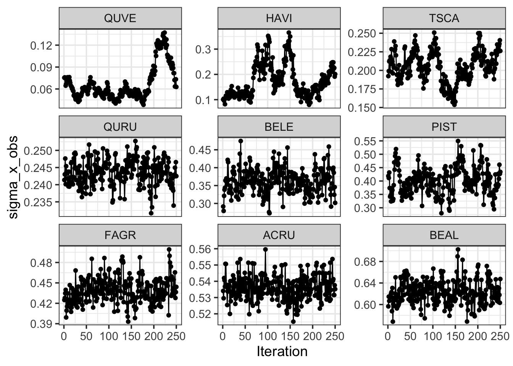
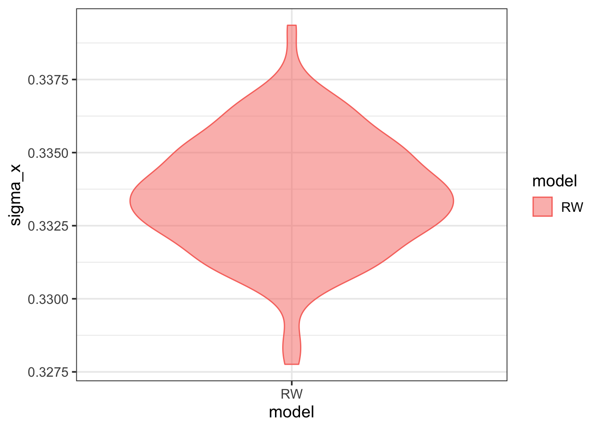
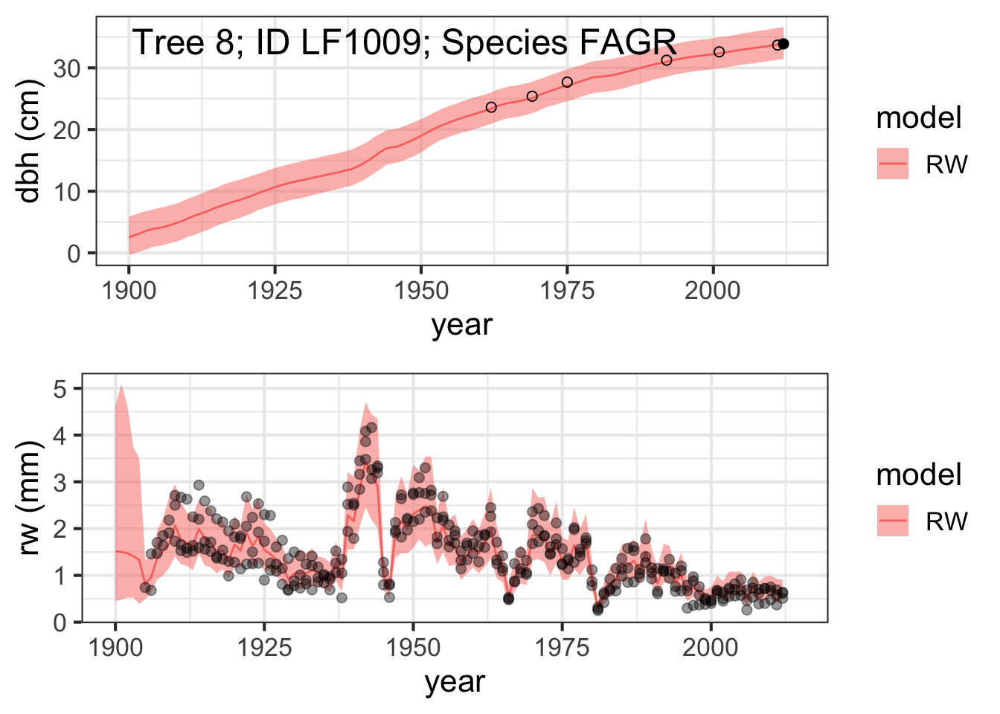
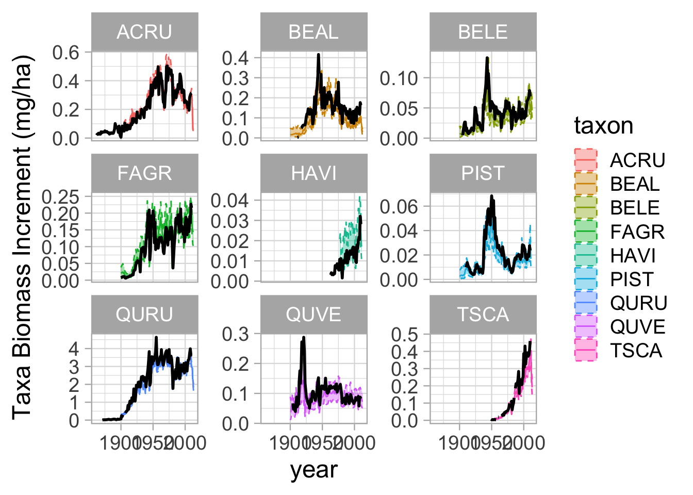

Code
library(rstan)
library(dplyr)
library(reshape2)
library(ggplot2)
library(grid)
library(gridExtra)
library(tidyr)Andria Dawson and Kelly Heilman
2025-07-26
This module introduces the workflow for the case where the only data informing the model is the ring-width dataset. This dataset includes diameter at time of coring, and one or more ring-width time series for each sampled tree.
This workflow involves:
First we will infer tree growth using the state space model introduced in Module 4. We will use Stan to implement the model and estimate the model parameters. Stan which interfaces to R via a package called rstan.
We will also make use of several other packages to organize, summarize, and visualize both the data and model values.
The data used to constrain the growth model includes the RW and Census data values. This is the same dataset used in Module 2.
To fit the model using rstan, the dataset needs to be a list of data objects.
[1] "list" [1] "N_Xobs" "N_years" "N_X" "N_X_C" "N_Tr"
[6] "N_Dobs" "N_C" "N_taxa" "Tr2X" "Tr2X_C"
[11] "Tr2taxon" "Tr2taxon_C" "X2C" "X2Tr" "X2Tr_C"
[16] "X2year" "X2year_C" "X2taxon" "X2taxon_C" "idx_C"
[21] "idx_Tr" "Dobs2X" "Xobs2X" "Xobs2X_C" "logDobs"
[26] "logTr" "logXobs" "Dobs" "Tr" "Xobs"
[31] "allTrees" "years" "taxa" taxa = dat$taxa # the taxa abbreviations
years = dat$years # the years where we will estimate increments
# STAN requires you to tell it the dimensions of the inputs and outputs, so we need to define these:
N_years = dat$N_years # number of years
N_Tr = dat$N_Tr # number of trees
N_taxa = dat$N_taxa # number of taxa
X2Tr = dat$X2Tr # vector of tree ids
X2year = dat$X2year # vector of years for each tree
Tr = dat$Tr %>% arrange(stat_id) # arrange the Tree data by ids, and save as Tr
taxon = Tr$taxon # vector of taxon ids
plot = Tr$plot # vector of plot ids
years = dat$years # vector of calendar years
year_lo = min(years) # minimum year
year_hi = max(years) # maximum year
pdbh = exp(dat$logTr) #vector of diameters
list2env(dat, envir = globalenv())# load all the data objects into the environment<environment: R_GlobalEnv>We will also load a previous estimate of the DBH data uncertainty sig_d_obs, and add this to our dataset. This estimate is used as data in the RW-only of the model. We will estimate the DBH data uncertainty in the models that include census measurements.
The stan model code is stored in the models/ folder. The RW only model is the growth_model_RW.stan. If you are working through this tutorial on R, you can view this file in your environment. We won’t dive too deep into how to write your own stan model, but note that this model includes several blocks:
data{}: inputs read in and used as “data” in the modelparameters: defines the parameters that will be estimated in the model (we will draw samples from these in the model block)transformed parameters: defines the parameters that are calculated from other parameters (we will draw samples from parameters and transform them into quantities we care about in this block)model: This is where the increment data model, diameter data model and liklihood function are defined// RW ONLY MODEL
data {
int<lower=0> N_Tr; // number of trees with rw measurements
int<lower=0> N_years; // number of years of data
int<lower=0> N_X; // number of increment values to estimate
int<lower=0> N_Xobs; // total number of increments
int<lower=0> N_taxa; // total number of taxa
int<lower=0> Tr2X[N_Tr]; // maps DBH measurements to estimated increment
int<lower=0> X2Tr[N_X]; // maps estimated increment values to tree ID
int<lower=0> X2year[N_X]; // maps estimated increment values to year ID
real logTr[N_Tr]; // log of DBH measurements
real logXobs[N_Xobs]; // log of increment measurements
real<lower=0> sig_d_obs; // mean diameter measurement error
int<lower=0> idx_Tr[N_Tr, 3]; // indicates first and last value index for each tree ID
int<lower=0> Xobs2X[N_Xobs]; // maps increment measurements to estimated values
int<lower=0> X2taxon[N_X];
//int<lower=0> Tr2taxon[N_Tr];
}
parameters {
real beta0;
real beta[N_Tr];
real<lower=0> beta_sd;
real<lower=0> beta_t_sd;
// real<lower=1e-6> sig_x;
real<lower=1e-6> sig_x[N_taxa];
real<lower=1e-6> sig_x_obs;
real<lower=-30, upper=80> D0[N_Tr];
vector<lower=1e-6> [N_X] X;
matrix[N_years, N_taxa] beta_t;
}
transformed parameters {
// process evolution
vector<lower=-30> [N_X] D;
for (tree in 1:N_Tr){
D[idx_Tr[tree,2]] = D0[tree] + 2.0 * X[idx_Tr[tree,2]] / 10.0;
for (val in (idx_Tr[tree,2]+1):(idx_Tr[tree,3])){
D[val] = D[val-1] + 2.0 * X[val] / 10.0;
}
}
}
model{
beta0 ~ normal(0, 1.0/0.00001);
sig_x_obs ~ uniform(1e-6, 2.0);
//sig_d_obs ~ uniform(1e-6, 1000);
// sig_x ~ uniform(1e-6, 1000);
beta_sd ~ uniform(1e-6, 1000);
beta_t_sd ~ uniform(1e-6, 1000);
for(tree in 1:N_Tr) {
D0[tree] ~ uniform(-30, 80);
beta[tree] ~ normal(beta0, beta_sd);
}
// for(year in 1:N_years) {
// beta_t[year] ~ normal(0, beta_t_sd);
// }
// temporal species effect prior
for(year in 1:N_years) {
beta_t[year,] ~ normal(0, beta_t_sd);
}
for (taxon in 1:N_taxa) {
sig_x[taxon] ~ uniform(1e-6, 1000);
}
// increment likelihood
// estimates
for (val in 1:N_X){
X[val] ~ lognormal(beta[X2Tr[val]] + beta_t[X2year[val], X2taxon[val]], sig_x[X2taxon[val]]);
}
// RW estimates against RW increments
for (inc in 1:N_Xobs){
logXobs[inc] ~ normal(log(X[Xobs2X[inc]]), sig_x_obs);
}
// diameter estimates against diameter measurements
for (tree in 1:N_Tr){
if (logTr[tree] == -999){
} else {
logTr[tree] ~ student_t(3, log(D[Tr2X[tree]]), sig_d_obs);
}
}
}To estimate growth using the growth model via Stan, we need to compile the model Stan code, and then sample from the parameter posterior distributions. The sampling function requires that we tell it the model we are using, the dataset we are using, the number of iterations, and the number of chains. The compute time for the sampling function can be quite long, depending on the model, data, and sampling algorithm settings (number of iterations and chains).
We will load the output from the fitted model (fitted model object and parameter posterior distributions).
The model output is a stanfit object. We can use this object to assess model fit, and to extract posterior distribution samples for the model parameters.
The default view for the object is a summary that shows summary statistics for the posterior samples for the model parameters. To access the summary table, you can use summary(fit_RW) There are arguments we can pass to the summary function to look at particular parameters, and specific the quantiles we want (among other things).
Below we look at a summary for the sig_x parameter, which characterizes the process uncertainty for each species, and the sig_x_obs parameter, which characterizes the increment data uncertainty for all of the data.
[1] 33819#summary(fit_RW)$summary # this will make a summary of the whole model fit, but is not loaded because there are so many parameters. Lets visualize a the taxa-level observation error and population-level observation errors for the increment uncertainty:
summary(fit_RW, pars = c('sig_x', 'sig_x_obs'), probs = c(0.1, 0.9))$summary mean se_mean sd 10% 90% n_eff
sig_x[1] 0.20488190 0.0052774625 0.020517124 0.17592308 0.2305686 15.11411
sig_x[2] 0.24361112 0.0004346820 0.003726972 0.23894971 0.2484215 73.51384
sig_x[3] 0.53627250 0.0006165916 0.007418167 0.52692643 0.5451584 144.74316
sig_x[4] 0.62271530 0.0023627334 0.022225488 0.59682482 0.6513141 88.48571
sig_x[5] 0.43875025 0.0021508195 0.018479598 0.41554438 0.4614233 73.82052
sig_x[6] 0.40137895 0.0078049201 0.050608128 0.33777250 0.4730428 42.04396
sig_x[7] 0.36228570 0.0036568839 0.034923499 0.31907824 0.4030384 91.20385
sig_x[8] 0.06669619 0.0094617907 0.023205397 0.04621721 0.1071442 6.01494
sig_x[9] 0.17472524 0.0207195674 0.065658430 0.10860390 0.2671303 10.04199
sig_x_obs 0.33355857 0.0001806953 0.001942860 0.33113140 0.3361441 115.60839
Rhat
sig_x[1] 1.0348694
sig_x[2] 1.0016063
sig_x[3] 0.9976559
sig_x[4] 0.9974586
sig_x[5] 0.9974667
sig_x[6] 1.0299605
sig_x[7] 0.9963360
sig_x[8] 1.2022020
sig_x[9] 0.9996491
sig_x_obs 1.0010834While not a complete list, we will look at 3 ways of evaluating the stan model fit itself: 1. Effective sample size 2. Rhat 3. Visualizing traceplots
The summary table also includes columns for effective sample size (n_eff) and Rhat. The effective sample size is a statistic used to estimate the number of posterior samples after accounting for autocorrelation. We want this number to be large. There is no definitive rule about the minimum n_eff needed to conclude that you have enough samples to make inference about model parameters, but the generally accepted minimum is 100 or 200 ESS for each parameter. In some cases the effective sample size can be larger than the total number of iterations.
We can use stan_ess to plot a histogram of the ratio of the effective sample size to the total number of iterations. The larger this value the better. Note than it can be larger than 1 because the ESS can be larger than the total number of iterations.
Rhat is a statistic that estimates model convergence. It is one way to try to answer the question: has the sampler converged sufficiently so that we are getting samples from the posterior distribution? At convergence, Rhat is equal to 1. Perfect convergence is hard to achieve in practice, so generally we want Rhat smaller than 1.01 (but this is not always possible for all parameters for some complex models).
Traceplots are useful to visualize if all the different chains are converging on a similar estimate for each value. Here we only show one chain, so it may not be as useful, but we can see that this estimate is varying around a mean value (and not slowly trending up/down over the number of samples).
We will want to work with posterior samples for the model parameters, and we can get these by extracting them from the model output object into an easier to work with object. This object is a three dimensional array, which dimensions equal to the number of iterations BY the number of chains BY the number of parameters.
To assess model convergence we also typically look at trace plots of the series of posterior samples for parameters, and plots that summarize the posterior samples.
Here we will consider the species specific process uncertainty parameter, sig_x. Each species has its own process uncertainty parameter. This means that there will be a set of posterior samples for sig_x for each species.
First we summarize the posterior samples for sig_x by species.
[1] 250 9colnames(post_sx) = taxa
post_sx_melt = melt(post_sx)
colnames(post_sx_melt) = c('iteration', 'species_code', 'sigma_x')
post_sx_melt$model = 'RW'
sig_x_mean = post_sx_melt %>%
group_by(species_code) %>%
dplyr::summarize(sig_x_mean = mean(sigma_x))
sig_x_mean = sig_x_mean[order(sig_x_mean$sig_x_mean),]
post_sx_melt$species_code = factor(post_sx_melt$species_code, levels=sig_x_mean$species_code)
# plot up the species level increment uncertainties
p = ggplot(data=post_sx_melt) +
# geom_boxplot(aes(x=species_code, y=sigma_x, colour=model, fill=model), alpha=0.5) +
geom_violin(aes(x=species_code, y=sigma_x, colour=model, fill=model), alpha=0.5) +
theme_bw(14) +
xlab('Species') +
ylab('sigma_x')
print(p)`stat_bin()` using `bins = 30`. Pick better value with `binwidth`.Then we look at the trace plots for the sig_x parameter for each species. Have all of these converged after 500 iterations?

Let’s look a the same types of figures for sig_x_obs, the RW data uncertainty. In this model there is only one parameter for this process uncertainty, common among all species.
variables = names(post_RW[1,1,])
allSXOBS = grep('sig_x_obs',variables)
post_sxobs = post_RW[,,allSXOBS]
# head(post_sx)
# dim(post_sx)
post_sxobs = data.frame(post_sxobs)
post_sxobs$iteration = seq(1, nrow(post_sxobs))
colnames(post_sxobs) = c('sigma_x_obs', 'iteration')
post_sxobs$model = 'RW'
p = ggplot(data=post_sxobs) +
# geom_boxplot(aes(x=species_code, y=sigma_x, colour=model, fill=model), alpha=0.5) +
geom_violin(aes(x=model, y=sigma_x_obs, colour=model, fill=model), alpha=0.5) +
theme_bw(14) +
#xlab('Species') +
ylab('sigma_x')
print(p)
`stat_bin()` using `bins = 30`. Pick better value with `binwidth`.Here we will also look at some summary figures for the beta_t parameter. For each species, there is a beta_t parameter for each year. This parameter is conceptually the same as a forest chronology; it is a time series that describes the common forest growth signal for a given species.
We could look at summary plots for the posterior samples for a given year for a given species, and do the same for all year BY species combinations. This would be (9 species) x (115 years) = 1035 trace plots, so we don’t look at all of them here.
We do want to visualize the beta_t chronology-like parameters as species-specific time series.
allBTs = grep('beta_t\\[',variables)
post_bt = post_RW[,,allBTs]
post_bt_melt = melt(post_bt)
post_bt_melt$model = 'RW'
bt_pars_split = strsplit(as.vector(post_bt_melt$parameters), '\\[|\\,|\\]')
post_bt_melt$species_code = taxa[sapply(bt_pars_split, function(x) as.numeric(x[[3]]))]
post_bt_melt$year = years[sapply(bt_pars_split, function(x) as.numeric(x[[2]]))]
colnames(post_bt_melt) = c('iteration', 'parameter', 'beta_t', 'model', 'species_code', 'year')
beta_t_quant = post_bt_melt %>%
group_by(model, species_code, year) %>%
dplyr::summarize(beta_t_lo = quantile(beta_t, 0.025),
beta_t_mid = quantile(beta_t, 0.5),
beta_t_hi = quantile(beta_t, 0.975),
beta_t_mean = mean(beta_t),
.groups = 'keep')
p = ggplot(data=beta_t_quant) +
geom_hline(aes(yintercept=0), lty=2, lwd=1.2) +
geom_point(aes(x=year, y=beta_t_mid)) +
geom_linerange(aes(x=year, ymin=beta_t_lo, ymax=beta_t_hi)) +
xlab('year') +
ylab('beta_t') +
# xlim(c(year_lo, year_hi)) +
theme_bw(16) +
facet_grid(species_code~.)
print(p)For the purpose of this workflow, we are most interested in the model inferred tree growth. For each tree, we have parameter estimates that describe increment and diameter growth through for each year.
Here we visualize inferred and observed diameter data for one tree (Tree 1). Filled circles indicate the diameter measurement included in this model and hollow circles are census diameter measurements not included in the model.
allDs = grep('D\\[',variables)
post_d = post_RW[,,allDs]
tree = 1
in.RW = tree %in% X2Tr
if (in.RW){
inds = which(X2Tr == tree)
yrinds = X2year[inds]
dbh_iter = t(post_d[,inds])
dbh_iter = data.frame(dbh_iter)
dbh_iter = data.frame(year=years[yrinds], dbh_iter)
dbh_mean = apply(dbh_iter[,2:ncol(dbh_iter)], 1, mean, na.rm=TRUE)
dbh_quant = t(apply(dbh_iter[,2:ncol(dbh_iter)], 1,
function(x) quantile(x, c(0.025, 0.5, 0.975), na.rm=TRUE)))
dbh_tree = data.frame(d_mean = dbh_mean,
d_median = dbh_quant[,2],
d_lo = dbh_quant[,1],
d_hi = dbh_quant[,3],
year = years[yrinds],
model = 'RW')
}
# determine which estimates correspond to this tree
inds_C = which(X2Tr_C == tree)
yrinds_C = X2year_C[inds_C]
idx_d_obs_C = which(Dobs$stat_id == tree)
dbh_obs_C = data.frame(d_obs = Dobs$dbh[idx_d_obs_C],
year = years[Dobs$year[idx_d_obs_C]])
stem_id = Dobs$ID[idx_d_obs_C][1]
if (in.RW){
idx_d_obs = which(Tr$stat_id == tree)
dbh_obs = data.frame(d_obs = Tr$dbh[idx_d_obs],
year = years[Tr$year[idx_d_obs]])
} else {
dbh_obs = data.frame(d_obs = numeric(0),
year = numeric(0))
}
# Create a text
grob = grobTree(textGrob(paste0('Tree ', tree, '; ID ', stem_id, '; Species ', taxon[tree] ), x=0.05, y=0.9, hjust=0,
gp=gpar(col="black", fontsize=18)))
p1 = ggplot() +
geom_ribbon(data=dbh_tree, aes(x=year, ymin=d_lo, ymax=d_hi, fill=model), alpha=0.5) +
geom_line(data=dbh_tree, aes(x=year, y=d_median, colour=model)) +
geom_point(data=dbh_obs, aes(x=year, y=d_obs), size=2) +
geom_point(data=dbh_obs_C, aes(x=year, y=d_obs), size=2, shape=1) +
xlab('year') +
ylab('dbh (cm)') +
xlim(c(year_lo, year_hi)) +
theme_bw(16) +
annotation_custom(grob)
print(p1)We also visualize inferred and observed increment for this tree (Tree 1).
allRWs = grep('X\\[',variables)
post_rw = post_RW[,,allRWs]
if (in.RW){
inds = which(X2Tr == tree)
yrinds = X2year[inds]
rw_iter = t(post_rw[,inds])
rw_iter = data.frame(rw_iter)
rw_iter = data.frame(year=years[yrinds], rw_iter)
rw_mean = apply(rw_iter[,2:ncol(rw_iter)], 1, mean, na.rm=TRUE)
rw_quant = t(apply(rw_iter[,2:ncol(rw_iter)], 1,
function(x) quantile(x, c(0.025, 0.5, 0.975), na.rm=TRUE)))
rw_tree = data.frame(x_mean = rw_mean,
x_median = rw_quant[,2],
x_lo = rw_quant[,1],
x_hi = rw_quant[,3],
year = years[yrinds],
model = 'RW')
}
inds_C = which(X2Tr_C == tree)
yrinds_C = X2year_C[inds_C]
if (in.RW){
idx_rw_obs = which(Xobs$stat_id == tree)
rw_obs = data.frame(x_obs = Xobs$incr[idx_rw_obs],
year = years[Xobs$year[idx_rw_obs]])
} else {
rw_obs = data.frame(x_obs = numeric(0),
year = numeric(0))
}
# # Create a text
# grob <- grobTree(textGrob(paste0('Tree ', tree, '; Stem ID ', stem_id, '; Species ', taxon[tree] ), x=0.05, y=0.9, hjust=0,
# gp=gpar(col="black", fontsize=22)))
p2 = ggplot() +
geom_ribbon(data=rw_tree, aes(x=year, ymin=x_lo, ymax=x_hi, fill=model), alpha=0.5) +
geom_line(data=rw_tree, aes(x=year, y=x_median, colour=model)) +
geom_point(data=rw_obs, aes(x=year, y=x_obs), size=2, alpha=0.4) +
xlab('year') +
ylab('rw (mm)') +
xlim(c(year_lo, year_hi)) +
theme_bw(16) #+
grid.arrange(p1, p2, nrow = 2)Let’s visualize the inferred and observed growth for another tree as well.
tree = 8
in.RW = tree %in% X2Tr
if (in.RW){
inds = which(X2Tr == tree)
yrinds = X2year[inds]
dbh_iter = t(post_d[,inds])
dbh_iter = data.frame(dbh_iter)
dbh_iter = data.frame(year=years[yrinds], dbh_iter)
dbh_mean = apply(dbh_iter[,2:ncol(dbh_iter)], 1, mean, na.rm=TRUE)
dbh_quant = t(apply(dbh_iter[,2:ncol(dbh_iter)], 1,
function(x) quantile(x, c(0.025, 0.5, 0.975), na.rm=TRUE)))
dbh_tree = data.frame(d_mean = dbh_mean,
d_median = dbh_quant[,2],
d_lo = dbh_quant[,1],
d_hi = dbh_quant[,3],
year = years[yrinds],
model = 'RW')
}
# determine which estimates correspond to this tree
inds_C = which(X2Tr_C == tree)
yrinds_C = X2year_C[inds_C]
idx_d_obs_C = which(Dobs$stat_id == tree)
dbh_obs_C = data.frame(d_obs = Dobs$dbh[idx_d_obs_C],
year = years[Dobs$year[idx_d_obs_C]])
stem_id = Dobs$ID[idx_d_obs_C][1]
if (in.RW){
idx_d_obs = which(Tr$stat_id == tree)
dbh_obs = data.frame(d_obs = Tr$dbh[idx_d_obs],
year = years[Tr$year[idx_d_obs]])
} else {
dbh_obs = data.frame(d_obs = numeric(0),
year = numeric(0))
}
# Create a text
grob = grobTree(textGrob(paste0('Tree ', tree, '; ID ', stem_id, '; Species ', taxon[tree] ), x=0.05, y=0.9, hjust=0,
gp=gpar(col="black", fontsize=18)))
p1 = ggplot() +
geom_ribbon(data=dbh_tree, aes(x=year, ymin=d_lo, ymax=d_hi, fill=model), alpha=0.5) +
geom_line(data=dbh_tree, aes(x=year, y=d_median, colour=model)) +
geom_point(data=dbh_obs, aes(x=year, y=d_obs), size=2) +
geom_point(data=dbh_obs_C, aes(x=year, y=d_obs), size=2, shape=1) +
xlab('year') +
ylab('dbh (cm)') +
xlim(c(year_lo, year_hi)) +
theme_bw(16) +
annotation_custom(grob)
#print(p1)
if (in.RW){
inds = which(X2Tr == tree)
yrinds = X2year[inds]
rw_iter = t(post_rw[,inds])
rw_iter = data.frame(rw_iter)
rw_iter = data.frame(year=years[yrinds], rw_iter)
rw_mean = apply(rw_iter[,2:ncol(rw_iter)], 1, mean, na.rm=TRUE)
rw_quant = t(apply(rw_iter[,2:ncol(rw_iter)], 1,
function(x) quantile(x, c(0.025, 0.5, 0.975), na.rm=TRUE)))
rw_tree = data.frame(x_mean = rw_mean,
x_median = rw_quant[,2],
x_lo = rw_quant[,1],
x_hi = rw_quant[,3],
year = years[yrinds],
model = 'RW')
}
inds_C = which(X2Tr_C == tree)
yrinds_C = X2year_C[inds_C]
if (in.RW){
idx_rw_obs = which(Xobs$stat_id == tree)
rw_obs = data.frame(x_obs = Xobs$incr[idx_rw_obs],
year = years[Xobs$year[idx_rw_obs]])
} else {
rw_obs = data.frame(x_obs = numeric(0),
year = numeric(0))
}
p2 = ggplot() +
geom_ribbon(data=rw_tree, aes(x=year, ymin=x_lo, ymax=x_hi, fill=model), alpha=0.5) +
geom_line(data=rw_tree, aes(x=year, y=x_median, colour=model)) +
geom_point(data=rw_obs, aes(x=year, y=x_obs), size=2, alpha=0.4) +
xlab('year') +
ylab('rw (mm)') +
xlim(c(year_lo, year_hi)) +
theme_bw(16) #+
grid.arrange(p1, p2, nrow = 2)
We have looked at diagnostics of the model sampling step, but it is a good idea to do some additional model validation. This typically involved comparing model and data values. Here we will visualize model inferred versus observed diamater and increment.
The modelled and observed diameter and increment values have already been organized into data frames. We will load them in order to visualize the information.
First we will look at the model versus data diameter scatter plot.
# comparing estimates of diameter increment to observation
dbh_validate = readRDS('output/DBH_VALIDATE_HARVARD.RDS')
dbh_validate = subset(dbh_validate, model == 'RW')
p = ggplot(data=dbh_validate) +
geom_abline(intercept=0, slope=1, lty=2, colour='red') +
geom_linerange(aes(x=d_obs, ymin=d_model_lo, ymax=d_model_hi, colour=model), alpha=0.3) +
geom_point(aes(x=d_obs, y=d_model_median, colour=model), size=2, alpha=0.3) +
geom_line(stat='smooth', method='lm', formula = y ~ x, aes(x=d_obs, y=d_model_median), colour = 'blue', alpha=0.5, fullrange=TRUE) +
xlab('dbh obs (cm)') +
ylab('dbh model (cm)') +
theme_bw(16) +
coord_fixed()
print(p)Now we visualize the model versus data diameter using a scatter plot. The Blue line is the best-fit line through the median predictions vs. observations. Do you think this model is under or over estimating increment data?
rw_validate = readRDS('output/RW_VALIDATE_HARVARD.RDS')
rw_validate = subset(rw_validate, model == 'RW')
q = ggplot(data=rw_validate) +
geom_abline(intercept=0, slope=1, lty=2, colour='red') +
geom_smooth(method='lm', aes(x=rw_obs, y=rw_model_median), fullrange=TRUE) +
geom_linerange(aes(x=rw_obs, ymin=rw_model_lo, ymax=rw_model_hi, colour=model), alpha=0.3) +
geom_point(aes(x=rw_obs, y=rw_model_median, colour=model), size=2, alpha=0.3) +
xlab('rw obs (mm)') +
ylab('rw model (mm)') +
theme_bw(16)
print(q)`geom_smooth()` using formula = 'y ~ x'We will use the model inferred tree growth to determine tree biomass. This is done using allometric equations, which are used to determine tree biomass based on tree size. In this workflow, we will use the allometric equations from Chojnacky et al. (XXXX). For each species, tree biomass is determined by tree diameter using the equation AGB = exp(beta0 + beta1 * log(DBH)), where beta0 and beta1 are published parameter values (estimated using destructive sampling that involves cutting down and weighing trees).
# code to estimate biomass
choj = read.csv('data/acronym_to_chojnacky_v0.1.csv', stringsAsFactors = FALSE)
# use HAVI (average of all hardwoods) for those species not found in chojnacky equations
gen = choj[which(choj$acronym == 'HAVI'),]
choj = choj %>% filter(acronym %in% unique(taxon_C))
head(choj) acronym common.name chojnacky.class beta0 beta1
1 ACRU red maple Aceraceae < 0.50 spg -2.0470 2.3852
2 HAVI average of all hardwoods -2.2424 2.4498
3 BELE sweet birch Betulaceae >= 0.60 spg -2.2652 2.5349
4 BEAL yellow birch Betulaceae 0.50-0.59 spg -1.8096 2.3480
5 FAGR american beech Fagaceae; deciduous -2.0705 2.4410
6 QURU northern red oak\xca Fagaceae; deciduous -2.0705 2.4410For each tree, for each year, and for each posterior diameter sample we determine tree biomass. We also regorganize the model inferred diameter so that both the diameter and biomass objects have the same structure.
We also reorganize the data to facilitate visualization.
Now we visualize biomass for a single tree through time.
tree = 1
agb_tree = agb_melt[which(agb_melt$tree == tree),]
agb_tree_quants = agb_tree %>%
dplyr::group_by(tree, year, model) %>%
dplyr::summarize(agb_mean = mean(value, na.rm=TRUE),
agb_median = quantile(value, c(0.5)),
agb_lo = quantile(value, c(0.025)),
agb_hi = quantile(value, c(0.975)), .groups = 'keep')
species_id = agb_tree$taxon[1]
stem_id = Tr$id[which(Tr$stat_id == tree)]
grob <- grobTree(textGrob(paste0('Tree ', tree, '; Stem ID ', stem_id, '; Species ', species_id ), x=0.05, y=0.9, hjust=0,
gp=gpar(col="black", fontsize=22)))
p1 = ggplot() +
geom_ribbon(data = agb_tree_quants, aes(x = year, ymin = agb_lo, ymax = agb_hi, fill = model), alpha=0.5) +
geom_line(data=agb_tree_quants, aes(x=year, y=agb_median, colour = model)) +
xlab('year') +
ylab('agb (kg)') +
xlim(c(year_lo, year_hi)) +
theme_bw(16) +
# ggtitle(paste0('Tree ', i)) +
annotation_custom(grob)
print(p1)We also want to determine biomass increment, which is the amount of biomass the tree accummulates in a given year. For a given tree, and a given iteration, we have a biomass time series (a single line through time that shows the biomass time series for that tree). To find the biomass increment, we subtract previous year biomass from current year biomass. Barring factors other than growth, trees are assumed to increase in size through time (or stay the same size). This means that biomass increment for a tree is always greater than or equal to 0. When the tree dies, it no longer contributes to biomass accommulation (and is removed entirely from the live biomass forest pool).
# first for RW only model
abi = apply(agb_array_RW, c(1,3), function(x) diff(x))
abi = aperm(abi, c(2, 1, 3))
abi_melt = melt(abi)
colnames(abi_melt) = c('tree', 'year', 'iter', 'value')
abi_melt = abi_melt %>% filter(!is.na(value))
abi_melt$year = years[abi_melt$year]
# abi_melt$plot = plot[abi_melt$tree]
abi_melt$taxon = taxon[abi_melt$tree]
abi_melt$model = rep("RW", nrow(abi_melt))
abi_melt$type = rep('abi',nrow(abi_melt))
tree=1
abi_tree = abi_melt[which(abi_melt$tree == tree),]
abi_tree_quants = abi_tree %>%
dplyr::group_by(tree, year, model) %>%
dplyr::summarize(abi_mean = mean(value, na.rm=TRUE),
abi_median = quantile(value, c(0.5)),
abi_lo = quantile(value, c(0.025)),
abi_hi = quantile(value, c(0.975)), .groups = 'keep')
p2 = ggplot() +
geom_ribbon(data = abi_tree_quants, aes(x = year, ymin = abi_lo, ymax = abi_hi, fill = model), alpha=0.5) +
geom_line(data=abi_tree_quants, aes(x=year, y=abi_median, colour = model)) +
xlab('year') +
ylab('abi (kg / year)') +
xlim(c(year_lo, year_hi)) +
theme_bw(16) #+
# ggtitle(paste0('Tree ', i)) +
# annotation_custom(grob)
# print(p1)
grid.arrange(p1, p2, nrow = 2)In this workflow we only consider trees that are above 5 cm diameter. To satisfy this constraint we need to filter out all model inferred tree diameters that are less than 5 cm. For a given tree, for a given year, if the mean diameter (across all iterations) is less than 5 cm, the samples are replaced with NA. This step ensures they won’t contribute to the species and site total biomass we will calculate.
# first for RW only model
for (tree in 1:N_Tr){
for (year in 1:N_years){
# determine mean DBH for this year and tree
dbh_mean = mean(dbh_array_RW[tree, year, ], na.rm=TRUE)
# if smaller than 5 cm., eliminate the data
if (is.na(dbh_mean) | dbh_mean >= 5) next
dbh_array_RW[tree, year, ] = rep(NA, iter)
agb_array_RW[tree, year, ] = rep(NA, iter)
}
}The sampling protocol used at Harvard Forest is described in Module 2, and is referred to as the double-nested circular design. As in Module 2, we need to perform a sampling correction to account for the fact that small trees (those with dbh less than 20 cm at time of sampling) were only sampled in the inner circle, while larger trees were sampled in both the inner circle and outer ring.
idx_small = which(pdbh<20)
idx_large = which(pdbh>=20)
# we need to adjust the biomass units from kg/plot to Mg/ha
inner_factor = (1 / (pi*13^2)) * (1/0.0001) * (1/1000)
outer_factor = (1 / (pi*20^2)) * (1/0.0001) * (1/1000)
agb_array_RW[idx_small,,] = agb_array_RW[idx_small,,] * inner_factor
agb_array_RW[idx_large,,] = agb_array_RW[idx_large,,] * outer_factor# melt down agb_array to data frame
agb_melt = melt(agb_array_RW)
colnames(agb_melt) = c('tree','year','iter','value')
agb_melt = agb_melt %>% filter(!is.na(value))
agb_melt$year = years[agb_melt$year]
agb_melt$plot = plot[agb_melt$tree]
agb_melt$taxon = taxon[agb_melt$tree]
agb_melt$model = rep("RW", nrow(agb_melt))
agb_melt$type = rep('ab',nrow(agb_melt))
# first for RW only model
abi = apply(agb_array_RW, c(1,3), function(x) diff(x))
abi = aperm(abi, c(2, 1, 3))
abi_melt = melt(abi)
colnames(abi_melt) = c('tree', 'year', 'iter', 'value')
abi_melt = abi_melt %>% filter(!is.na(value))
abi_melt$year = years[abi_melt$year]
abi_melt$plot = plot[abi_melt$tree]
abi_melt$taxon = taxon[abi_melt$tree]
abi_melt$model = rep("RW", nrow(abi_melt))
abi_melt$type = rep('abi',nrow(abi_melt))agb_taxon_by_iter = agb_melt %>%
group_by(year, iter, taxon, plot, model) %>%
# # sum up the taxon-level information by plot, iteration, year
summarise( AGB.taxon.plot = sum(value, na.rm =TRUE)) %>% ungroup() %>%
#
# get the mean value across plots for each iteration:
group_by(year, iter, taxon, model) %>%
# dplyr::summarize(AGB.iter.mean = mean(value, na.rm = TRUE),
# .groups='keep')
dplyr::summarize(AGB.iter.mean = mean(AGB.taxon.plot, na.rm = TRUE),
.groups='keep')`summarise()` has grouped output by 'year', 'iter', 'taxon', 'plot'. You can
override using the `.groups` argument.agb_taxon_summary = agb_taxon_by_iter %>%ungroup() %>%
group_by(year, taxon, model) %>%
dplyr::summarize(AGB.mean = mean(AGB.iter.mean, na.rm = TRUE),
AGB.sd = sd(AGB.iter.mean, na.rm=TRUE),
AGB.lo = quantile(AGB.iter.mean, c(0.025), na.rm=TRUE),
AGB.hi = quantile(AGB.iter.mean, c(0.975), na.rm=TRUE),
.groups='keep')
abi_taxon_by_iter = abi_melt %>%
group_by(year, iter, taxon, plot, model) %>%
summarise( AGBI.taxon.plot = sum(value, na.rm =TRUE)) %>% ungroup() %>%
group_by(year, iter, taxon, model) %>%
dplyr::summarize(ABI.iter.mean = mean(AGBI.taxon.plot, na.rm = TRUE),
.groups='keep')`summarise()` has grouped output by 'year', 'iter', 'taxon', 'plot'. You can
override using the `.groups` argument.#taxon summary data without plot
abi_taxon_summary = abi_taxon_by_iter %>% ungroup() %>%
group_by(year, taxon, model) %>%
dplyr::summarize(ABI.mean = mean(ABI.iter.mean, na.rm = TRUE),
ABI.sd = sd(ABI.iter.mean, na.rm=TRUE),
ABI.lo = quantile(ABI.iter.mean, c(0.025), na.rm=TRUE),
ABI.hi = quantile(ABI.iter.mean, c(0.975), na.rm=TRUE),
.groups='keep')agb_all_plot_by_iter <- agb_melt |>
group_by(year, iter, plot, model) |>
# sums all of the trees by plot
dplyr::summarize(AGB.sum = sum(value),
.groups = 'keep')
agb_site_by_iter <- agb_all_plot_by_iter |>
group_by(year, iter, model) |>
dplyr::summarize(AGB.iter = mean(AGB.sum),
.groups = 'keep')
agb_site_summary = agb_site_by_iter %>%
group_by(year, model) %>%
dplyr::summarize(abmean = mean(AGB.iter, na.rm=T),
ab025 = quantile(AGB.iter, 0.025),
ab50 = quantile(AGB.iter, 0.5),
ab975 = quantile(AGB.iter, 0.975),
.groups = 'keep') %>%
ungroup()
abi_all_plot_by_iter <- abi_melt |>
group_by(year, iter, plot, model) |>
dplyr::summarize(ABI.sum = sum(value),
.groups = 'keep')
abi_site_by_iter <- abi_all_plot_by_iter |>
group_by(year, iter, model) |>
dplyr::summarize(ABI.iter = mean(ABI.sum),
.groups = 'keep')
abi_site_summary = abi_site_by_iter %>%
group_by(year, model) %>%
dplyr::summarize(abimean = mean(ABI.iter, na.rm=T),
abi025 = quantile(ABI.iter, 0.025),
abi50 = quantile(ABI.iter, 0.5),
abi975 = quantile(ABI.iter, 0.975),
.groups = 'keep') %>%
ungroup()# A tibble: 6 × 19
# Groups: tree [1]
cal.year cored.cal.year incr.avg id dbh cum.diainc dia.inc plot taxon
<dbl> <dbl> <dbl> <chr> <dbl> <dbl> <dbl> <dbl> <chr>
1 1861 2010 1.99 LF3017 50 43.5 0.398 3 ACRU
2 1862 2010 3.01 LF3017 50 43.1 0.602 3 ACRU
3 1863 2010 3.49 LF3017 50 42.5 0.698 3 ACRU
4 1864 2010 3.02 LF3017 50 41.8 0.605 3 ACRU
5 1865 2010 3.48 LF3017 50 41.2 0.696 3 ACRU
6 1866 2010 2.55 LF3017 50 40.5 0.51 3 ACRU
# ℹ 10 more variables: dbh_cm_bc <dbl>, SPCD <dbl>, COMMON_NAME <chr>,
# GENUS <chr>, SPECIES <chr>, `Scientific Name` <chr>, AGB_kg <dbl>,
# tph_corr <dbl>, tree <int>, AGBI_kg <dbl>TR_AGB_sub = subset(TR_AGB, tree==1)
p1 = ggplot() +
geom_ribbon(data = agb_tree_quants, aes(x = year, ymin = agb_lo, ymax = agb_hi, fill = model), alpha=0.5) +
geom_line(data=agb_tree_quants, aes(x=year, y=agb_median, colour = model)) +
geom_line(data=TR_AGB_sub, aes(x=cal.year, y=AGB_kg)) +
xlab('year') +
ylab('Tree Level Biomass (kg)') +
xlim(c(year_lo, year_hi)) +
theme_bw(16) +
# ggtitle(paste0('Tree ', i)) +
annotation_custom(grob)
print(p1)p2 = ggplot() +
geom_ribbon(data = abi_tree_quants, aes(x = year, ymin = abi_lo, ymax = abi_hi, fill = model), alpha=0.5) +
geom_line(data=abi_tree_quants, aes(x=year, y=abi_median, colour = model)) +
geom_line(data=TR_AGB_sub, aes(x=cal.year, y=AGBI_kg)) +
xlab('year') +
ylab('Tree-level Biomass Increment (kg / year)') +
xlim(c(year_lo, year_hi)) +
theme_bw(16)
print(p2)Warning: Removed 1 row containing missing values or values outside the scale range
(`geom_line()`).TAXA.AGB <- TR_AGB %>% group_by(taxon, COMMON_NAME, GENUS, SPECIES, cal.year, plot) %>%
summarise(AGB_Mg_ha_taxa_plot = sum(AGB_kg*tph_corr),
AGBI_Mg_ha_taxa_plot = sum(AGBI_kg*tph_corr)) %>%
filter(cal.year <= 2010) %>%
ungroup() %>%
group_by(taxon, COMMON_NAME, GENUS, SPECIES, cal.year) %>%
summarise(AGB_Mg_ha_taxa = mean(AGB_Mg_ha_taxa_plot, na.rm = TRUE),
AGBI_Mg_ha_taxa = mean(AGBI_Mg_ha_taxa_plot, na.rm =TRUE)) #%>%`summarise()` has grouped output by 'taxon', 'COMMON_NAME', 'GENUS', 'SPECIES',
'cal.year'. You can override using the `.groups` argument.
`summarise()` has grouped output by 'taxon', 'COMMON_NAME', 'GENUS', 'SPECIES'.
You can override using the `.groups` argument.site.AGB <- TR_AGB %>% group_by(cal.year, plot) %>%
summarise(AGB_Mg_ha_plot = sum(AGB_kg*tph_corr),
AGBI_Mg_ha_plot = sum(AGBI_kg*tph_corr)) %>%
filter(cal.year <= 2010) %>%
ungroup() %>%
group_by( cal.year) %>%
summarise(AGB_Mg_ha = mean(AGB_Mg_ha_plot, na.rm = TRUE),
AGBI_Mg_ha = mean(AGBI_Mg_ha_plot, na.rm =TRUE)) `summarise()` has grouped output by 'cal.year'. You can override using the
`.groups` argument.ggplot(data = agb_taxon_summary)+
geom_ribbon(aes(x=year, ymin=AGB.lo, ymax=AGB.hi, colour=taxon, fill=taxon), alpha=0.4, linetype=2) +
geom_line(aes(x = year, y = AGB.mean, color = taxon))+
geom_line(data = TAXA.AGB, aes(x = cal.year, y = AGB_Mg_ha_taxa), size = 1)+
#facet_grid(model~., scales='free_y') +
theme_light(18) +
ylab('Taxa Biomass (mg/ha)')+facet_wrap(~taxon, scales = "free_y")Warning: Using `size` aesthetic for lines was deprecated in ggplot2 3.4.0.
ℹ Please use `linewidth` instead.ggplot(data = abi_taxon_summary)+
geom_ribbon(aes(x=year, ymin=ABI.lo, ymax=ABI.hi, colour=taxon, fill=taxon), alpha=0.4, linetype=2) +
geom_line(aes(x = year, y = ABI.mean, color = taxon))+
geom_line(data = TAXA.AGB, aes(x = cal.year, y = AGBI_Mg_ha_taxa), size = 1)+
#facet_grid(model~., scales='free_y') +
theme_light(18) +
ylab('Taxa Biomass Increment (mg/ha)')+facet_wrap(~taxon, scales = "free_y")Warning: Removed 1 row containing missing values or values outside the scale range
(`geom_line()`).
# site -level AGB:
ggplot(data = agb_site_summary)+
geom_ribbon(aes(x=year, ymin=ab025, ymax=ab975), alpha=0.4, linetype=2) +
geom_line(aes(x = year, y = abmean))+
geom_line(data = site.AGB, aes(x = cal.year, y = AGB_Mg_ha), linetype = 3)+
#facet_grid(model~., scales='free_y') +
theme_light(18) +
ylab('Site-level Biomass (mg/ha)')ggplot(data = abi_site_summary)+
geom_ribbon(aes(x=year, ymin=abi025, ymax=abi975), alpha=0.4, linetype=2) +
geom_line(aes(x = year, y = abimean))+
geom_line(data = site.AGB, aes(x = cal.year, y = AGBI_Mg_ha), linetype = 3)+
#facet_grid(model~., scales='free_y') +
theme_light(18) +
ylab('Site-level Biomass Increment (mg/ha)')Warning: Removed 1 row containing missing values or values outside the scale range
(`geom_line()`).